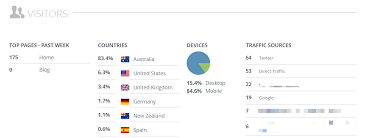

In the world of website building, simplicity and speed are often hard to come by—until Strikingly entered the scene. Strikingly is a powerful website builder designed for users of all technical levels. Whether you're a student, entrepreneur, artist, or small business owner, Strikingly empowers you to build stunning one-page websites without writing a single line of code.
Founded in 2012, Strikingly has rapidly grown in popularity for its ease of use, mobile-responsive design, and streamlined interface. It offers a selection of professionally designed templates and intuitive editing tools that let you publish your site within minutes. The platform caters to a wide range of use cases—from personal portfolios to landing pages, startup websites, event pages, and more.
This book is designed to take you on a step-by-step journey through the entire Strikingly ecosystem. We’ll start by creating an account and touring the dashboard, then dive into designing pages, adding content, configuring domains, enabling analytics, and ultimately publishing a polished website. Each chapter includes screenshots, real-world tips, and clear instructions to help you build with confidence.
By the end of this book, you will have mastered the tools offered by Strikingly and be equipped to launch a professional-grade website of your own. Whether you're a complete beginner or just looking to sharpen your skills, this guide is your perfect companion.
2. Creating a Free Account
Getting started with Strikingly is a straightforward process that takes less than five minutes. Whether you're a beginner or experienced user, signing up is the first step toward building your beautiful new website.
Step 1: Visit the Strikingly Website
Open your browser and navigate to www.strikingly.com. You’ll land on the homepage where you’ll see a prominent "Get Started" or "Create Your Website" button.
Step 2: Choose Your Signup Method
Strikingly allows you to sign up in several ways:
Using your email address
Signing in with your Google account
Signing in with Facebook
For this guide, we’ll use the email method. Enter your full name, email address, and choose a strong password.
Step 3: Account Verification
After signing up, Strikingly may send you a confirmation email. Check your inbox and click the confirmation link to activate your account fully.
Step 4: Landing on the Dashboard
Once signed in, you’ll be redirected to your personal dashboard. Here, you can start your first website, explore templates, or view tutorials.
Tips for New Users
Bookmark your dashboard for quick access later.
Use a professional email if you plan to use your site for business.
Start with a free template and upgrade later as your needs grow.
Now that you've created your account, you're ready to explore the Strikingly dashboard and begin your first website project!
3. Navigating the Dashboard
Once you've signed in to your Strikingly account, you’ll be welcomed by a clean and modern dashboard — your central hub for managing websites, audience data, analytics, and account settings.
Main Dashboard Overview
The dashboard is divided into several useful areas:
Sites: Lists all the websites you’ve created. Click “Create New Site” to start another one.
Audience: View contacts, form responses, newsletter subscribers, and member registrations.
Settings: Access your global account settings (email, password, plans, integrations).
Help Center: A knowledge base with guides, FAQs, and live support chat.

Managing Your Sites
Each site appears in a card-like view showing:
Site Name
Edit (opens website builder)
Analytics
Settings gear icon
Click “Edit” to jump directly into your website editor.
Account Settings
Click your profile image at the top-right corner to access:
Personal info (name, email, password)
Plan & billing details
Third-party integrations (like Google or Facebook login)
Support center access
Support & Learning
Strikingly’s Help Center is full of:
Step-by-step tutorials
Live chat support
Community Q&A and blog resources
Use the search bar to find articles on any feature quickly.
Use the mobile preview toggle to see how your site appears on phones.
Hover over icons to see tooltips with extra guidance.
Explore announcements for updates and new features.
Summary
The dashboard is your Strikingly control center. From launching new websites to tweaking account settings, this interface keeps your tools and data organized in one place. Mastering it early will make the rest of your website-building journey a breeze.
4. Exploring Templates
Strikingly offers a wide variety of modern, professionally designed templates that are mobile-responsive and optimized for different website types. Whether you're building a personal portfolio, a business page, a product launch, or a blog, there's a template ready to be customized.
Accessing the Template Library
To explore available templates:
Go to your Strikingly Dashboard.
Click the “Create New Site” button.
You’ll be presented with a gallery of templates categorized by use case: Business, Startup, Blog, Portfolio, and more.
Previewing a Template
Click on any template to preview it in full. You can navigate through the demo pages and see how it looks on desktop and mobile views. Use the preview to decide if the structure and style match your needs.
Selecting and Using a Template
Once you’ve selected your template, click “Start Editing”. This action will:
Create a new website project based on the chosen template
Redirect you to the editor where you can start customizing
Changing Templates Later
It’s important to note that Strikingly does not allow switching templates after your site is created. Make sure you’re happy with your choice before moving forward. If you want a new design, you’ll need to start a new site and select a different template.
Template Best Practices
Choose a template that aligns closely with your goal (e.g. use a "Startup" theme for product launches).
Don’t worry about colors or images—they’re all customizable in the next steps.
Focus on the layout and structure instead of the placeholder content.
With the perfect template selected, you're ready to move on to actually building your first page!
<
5. Building Your First Page
Now that you’ve selected a template, it’s time to build your first page. Strikingly’s editor is divided into sections: header, content blocks, and footer. Each section can be customized independently.
Step 1: Add a New Section
Click the “+ Add New Section” button on the left sidebar.
Choose the type of section you want (e.g., Hero, About, Features, Gallery).
Step 2: Rearrange Sections
Hover over a section and use the drag handle to reorder. This flexibility lets you experiment with flow and hierarchy.
Step 3: Save Your Progress
Click the Save button often. Strikingly auto-saves, but manual saves ensure you can revert to earlier versions from the Site Settings > Versions menu.
6. Customizing Site Layout
Your layout sets the visual rhythm of your site. Strikingly provides spacing, background, and alignment controls for each section.
Padding & Spacing
In the Section Settings, adjust top/bottom padding to add breathing room. Use uniform spacing to maintain consistency across content blocks.
Backgrounds & Overlays
Choose a solid color, gradient, or image background. For text-heavy sections, apply a semi-transparent overlay to ensure readability.
Section Width
Toggle between full-width and boxed layouts to frame your content. Full-width is ideal for large visuals; boxed works best for text-centric pages.
7. Adding Text and Images
Content is king. Strikingly’s rich text editor and image manager make it easy to create compelling narratives.
Text Blocks
Click a text block to edit. Use heading tags (H1–H4), bold, italic, lists, and links. Remember to keep paragraphs concise and scannable.
Uploading Images
Click the image placeholder or choose Replace Image.
Upload from your computer, or choose from Unsplash integrations.
Add descriptive alt text for accessibility and SEO.
Image Galleries
Select the Gallery section to create a slideshow or grid. Configure transition, autoplay, and captions to enhance user engagement.
8. Embedding Videos and Media
Engage visitors with multimedia. Strikingly supports video, audio, and interactive embeds.
Video Blocks
Add a Video section.
Paste a YouTube, Vimeo, or Wistia URL.
Customize play settings and poster image.
Audio & Other Media
Embed SoundCloud audio, Google Maps, or custom HTML iframes via the Embed section. Use responsibly to avoid slowing page load times.
9. Managing Blog Sections
Strikingly’s blog feature lets you publish articles, manage drafts, and categorize posts.
Creating a Post
Navigate to your site editor and add a Blog section.
Click New Post, add title, content, and featured image.
Assign categories or tags to improve organization.
Scheduling & Publishing
Set a publish date or save as a draft. Drafts are only visible in the editor until you hit Publish.
10. Creating Navigation Menus
Menus help users navigate your one-page or multi-page site efficiently.
Adding Menu Items
Open Site Settings > Navigation.
Click Add Menu Item, enter label and link (page section or external URL).
Anchor Links
For on-page sections, select Section type and choose the target. This creates smooth scrolling effects.
Mobile Menu
Preview your menu under the mobile toggle. Adjust item order to ensure key pages appear first.
11. Integrating Social Media
Boost your reach by adding social icons, feeds, and share buttons.
Social Icons
Add a Social section.
Select icons for Facebook, Twitter, Instagram, LinkedIn, and add your profile URLs.
Live Feeds
Use the Embed block to add custom widgets like Instagram galleries or Twitter timelines.
Share Buttons
Enable built-in share buttons under Site Settings > Social & Sharing to let visitors share your content directly.
12. Adding Contact Forms
Contact forms allow you to collect inquiries, feedback, and leads.
Form Builder
Add a Form section.
Use drag-and-drop to add fields: text, email, phone, dropdown.
Configure required fields and placeholders.
Notifications & Data
Set the notification email under Form Settings. Connect submissions to Google Sheets via Zapier for automated record keeping.
13. Custom Domain Setup
A custom domain makes your site memorable and professional.
Buying a Domain
Purchase directly through Strikingly under Site Settings > Domain, or use an external registrar.
Connecting an External Domain
Under Domain, select Connect Existing Domain.
Update your DNS records: add an A record pointing to 54.183.102.22 and a CNAME for www to strikingly.com.
Wait up to 48 hours for propagation, then verify connection.
14. SEO Optimization
Improve search rankings by configuring meta tags, URLs, and image alt text.
Page Settings
Go to Site Settings > SEO.
Enter your site title, meta description (50–160 characters), and keywords.
URL Slugs
Edit each page’s URL slug to include your primary keyword. Keep slugs short and descriptive.
Performance Tips
Optimize images (< 200KB) before uploading.
Limit custom fonts and third-party scripts.
15. Viewing Website Analytics
Track performance metrics in real time to make data-driven decisions.
Built-In Analytics
In your dashboard, click Analytics to view:
Page views and unique visitors
Traffic sources (direct, organic, social)
Device distribution (desktop, mobile, tablet)
Google Analytics Integration
Under Settings > Analytics & Tracking, paste your GA tracking ID.
Verify data flows into your Google Analytics dashboard.
16. Publishing Your Website
When you’re happy with your edits, it’s time to go live.
Review Checklist
Proofread all text and check links.
Test forms and media embeds.
Preview on desktop and mobile.
Publish Settings
Click Publish in the top right. Choose visibility: Public, Password Protected, or Private (for members only).
17. Mobile Optimization
With over half of web traffic on mobile, optimizing for small screens is essential.
Mobile View
Toggle the mobile preview icon. Adjust section visibility, font sizes, and button widths specifically for mobile.
Hide Sections
In Section Settings, enable Hide on Mobile for non-critical elements to streamline the user experience.
18. Advanced Custom Code
For full control, inject custom HTML, CSS, or JavaScript.
Code Injection
Go to Settings > Custom Code.
Paste scripts in the Header or Footer sections.
HTML Sections
Add an Embed section and switch to HTML mode to insert custom markup.
19. Upgrading Plans
As your site grows, you may need more features, bandwidth, or storage.
Plan Comparison
Free: Basic features, Strikingly branding.
Limited: Custom domain, remove branding.
Pro: Unlimited bandwidth, store, newsletter.
VIP: Priority support, advanced analytics.
Upgrading
In your dashboard, click Upgrade, choose a plan, and enter billing details. Plans renew monthly or annually.
20. Tips for a Professional Website
Follow these best practices to ensure your site stands out:
Consistent Branding: Use a unified color palette and typography.
Clear CTA: Place call-to-action buttons above the fold.
Fast Load Times: Compress images and minimize scripts.
Accessible Design: Ensure contrast ratios and use alt text.
Regular Updates: Keep content fresh to improve SEO and engagement.
Congratulations! You’ve completed the Mastering Strikingly guide. With these skills, you’re ready to launch a site that looks great and performs reliably.